Stage de 1ère Année
Contexte
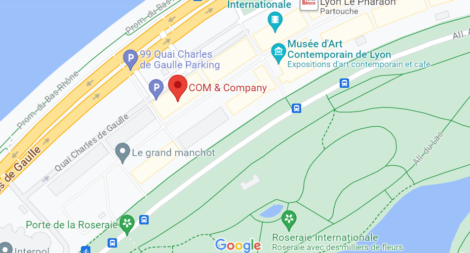J'ai effectué mes deux stages en tant que développeur d'applications web. L'entreprise se situe à Lyon, à la Cité internationale. COM & Company appartient au groupe Valority dont le coeur de métier est la vente immobilière. Elle permet donc de dévolopper des outils adaptés à la demande des métiers du groupe.
Mission
Durant ce premier stage, une seule mission m'a été confiée. Le projet Charon. Une application web permettant la gestion des crons utilisés par l'entreprise.
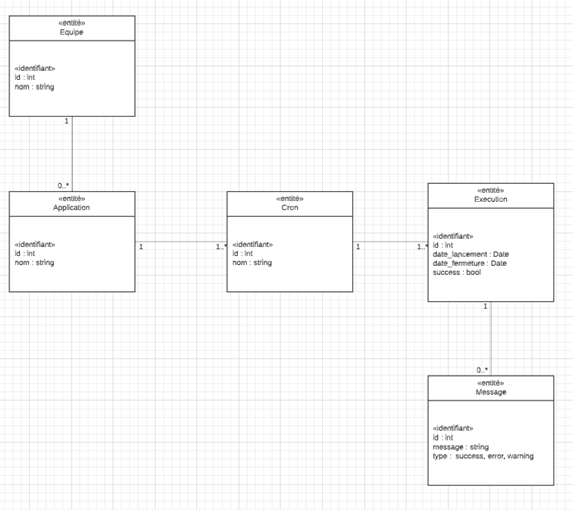
Avant de commencer le projet, il a fallu modéliser la base de données et découper les tâches pour répondre à la demande.
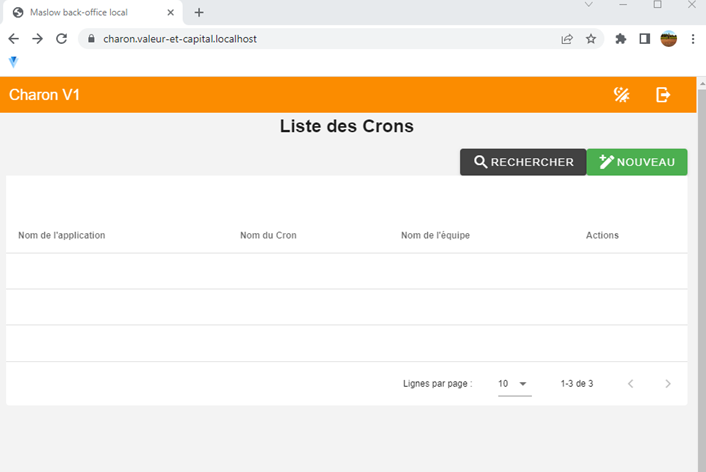
Après avoir acquis les bases avec Vue.Js, j'ai commencé à traviller ce projet.
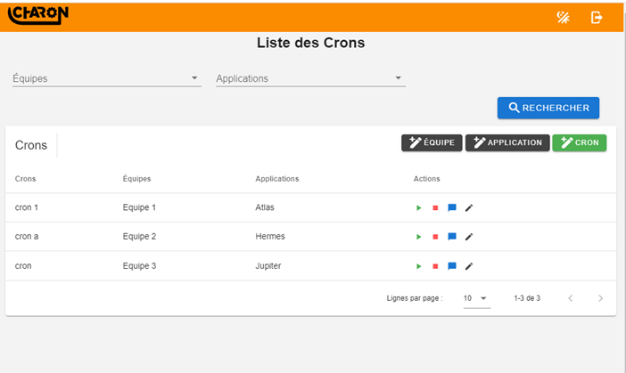
Les fonctionnalités se précisent, on a une zone de filtre, la possibilité de créer une équipe, une application et un cron. Mais aussi de lancer ou stopper le cron, acceder aux messages logs et modifier le cron.
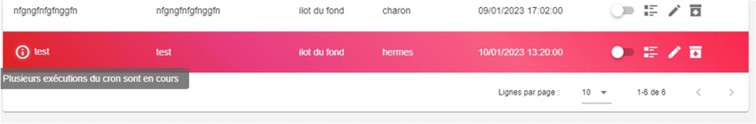
Enfin nous avons la possibilité d'archiver les crons si il ne sont plus utilisés et dès qu'il y a une erreur, elle est surlignée.
Pour l'utilisation de l'API de Charon, et pour les autres utilisateurs, j'ai effectué une documentation.
Documentation technique de l'API
Technologies utilisés :


 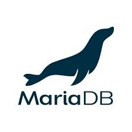
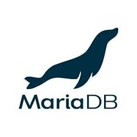
Bilan
Ce premier stage m'a permis de faire un pas dans le monde de l'entreprise et de découvrir une nouvelle façon d'apprendre que les cours traditionnels. J'ai appris à utiliser des nouvelles technologies comme Symfony, Vue.Js, l'IDE PHPStorm, ou encore de me familiariser avec Git. Un temps d'adaptation qui m'a fait au début douter, mais j'en ressort aujourd'hui plein de connaissances.
Stage de 2ème Année
Missions
Lors de mon 2ème stage, j'ai commencé par reprendre Charon pour corriger quelques bugs qu'on m'a envoyé par email
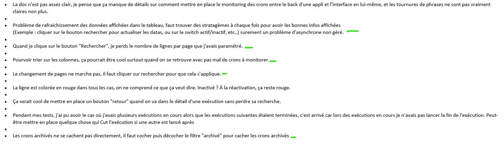
J'y es aussi ajouter une nouvelle fonctionnalité, un dashboard, permettant de voir plus facilement les logs d'erreur lors de l'exécution d'un cron
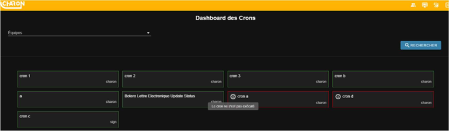
Nouvelle mission, Narcisse ! Une application web pour paramétrer des images et les afficher. Je me suis occupé de faire une interface graphique et de coder pour régler l'image suivant sa width ou sa height, selon le bon vouloir de l'utilisateur.
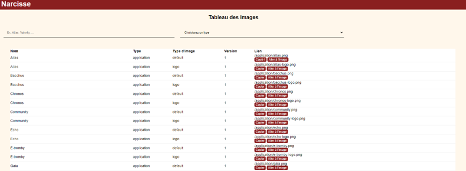
Enfin, Maslow, une application web pour l'investissement immobilier. Mes missions ont été de corriger des bugs notamment sur le menu nav bar
Mais la durée du stage à été consacrée au back office de Maslow, permettant la configuration de la page que l'utilisateur peut voir.
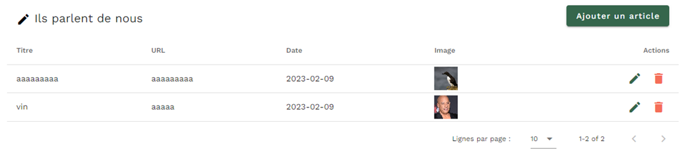Voici la configuration en Back Office
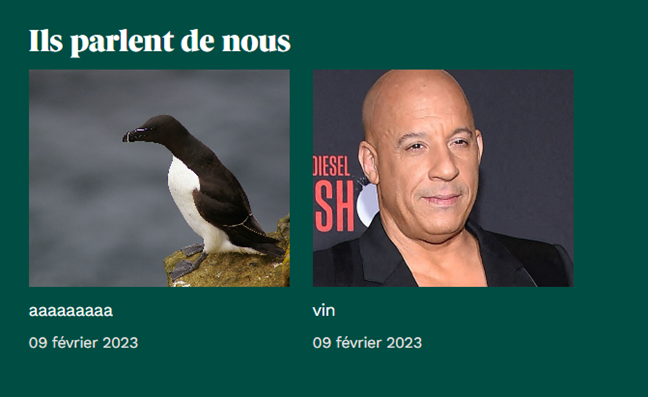
Et le résultat du côté utilisateur :)
Bilan
Ce stage a duré seulement 6 semaines, mais j'ai la sensation satisfaisante de part l'expérience de l'année dernière, d'avoir fourni un travail de meilleur qualité et un plus grand nombre de tâches accomplies. Je remercie mon maître de stage ainsi que tout l'îlot pour le partage de leurs connaissances.